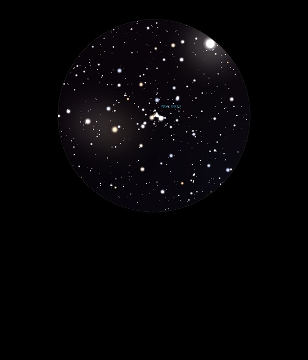

NGC 6910
Open Cluster with Nebulosity in
Cygnus
NGC 6910
Mag 7.4
20/11/13
A really
neat Open Cluster
Looks
like a sleigh being pulled by HIP 100434 and HIP 100501
30/08/16
A rather sparse and ragged Open Cluster, especially in 12mm
However, in 25mm the FOV includes HIP 100501 at Mag 5.95, very
orange, and HIP 100434 at Mag 6.35 only slightly less orange,
and within the cluster itself V2245 Cyg, HIP 100542 very sharp
and yellow at Mag 8.50, all in all a very attractive FOV